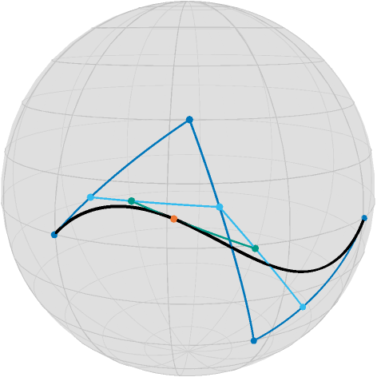
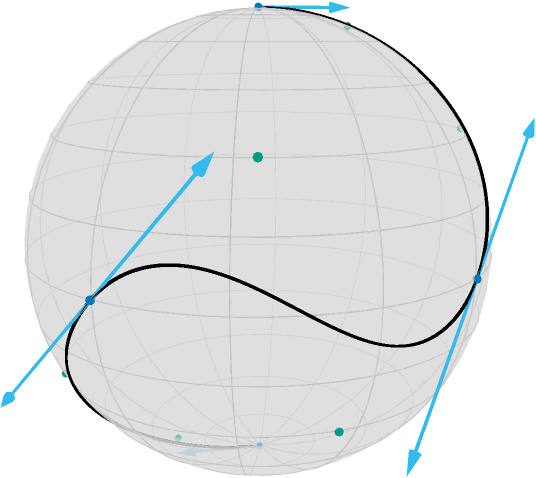
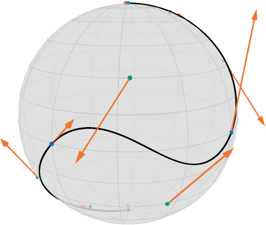
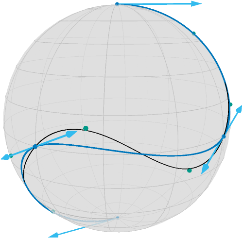
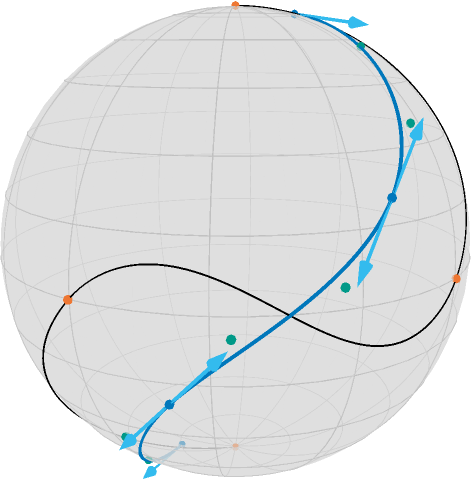
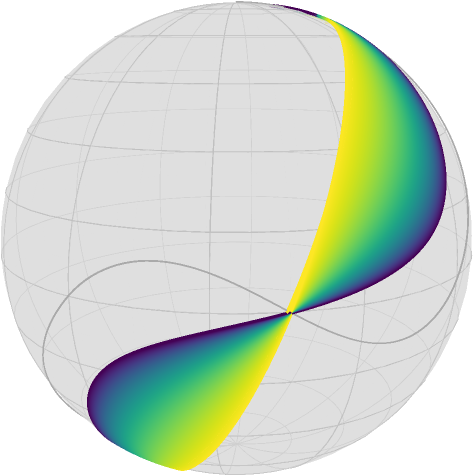

Bezier curves and their acceleration
This tutorial illustrates how Bézier curves are generalized to manifolds and how to minimize their acceleration, i.e. how to get a curve that is as straight or as geodesic while fulfilling constraints
This example also illustrates how to apply the minimization on the corresponding PowerManifold manifold using a gradient_descent with ArmijoLinesearch.
Table of contents
- Setup
- de Casteljau algorithm on manifolds
- Composite Bézire curves
- Minimizing the acceleration of a Bézier curve
- Literature
Setup
We first initialize the necessary packages
using Manopt, Manifoldsand we define some colors from Paul Tol
using Colors
black = RGBA{Float64}(colorant"#000000")
TolVibrantBlue = RGBA{Float64}(colorant"#0077BB")
TolVibrantOrange = RGBA{Float64}(colorant"#EE7733")
TolVibrantMagenta = RGBA{Float64}(colorant"#EE3377")
TolVibrantCyan = RGBA{Float64}(colorant"#33BBEE")
TolVibrantTeal = RGBA{Float64}(colorant"#009988")Then we load our data, see artificial_S2_composite_bezier_curve, a composite Bezier curve consisting of 3 segments on the Sphere
B = artificial_S2_composite_bezier_curve();De Casteljau algorithm on manifolds
This curve can be evaluated using de Casteljau's algorithm[Casteljau1959][Casteljau1963] named after Paul de Casteljau(*1930). To simplify the idea and understand this algorithm, we will first only look at the points of the first segment
M = Sphere(2)
b = B[2].pts4-element Array{Array{Float64,1},1}:
[0.0, -1.0, 0.0]
[-0.5, -0.7071067811865476, -0.5]
[-0.7071067811865476, -0.5, 0.5]
[-1.0, 0.0, 0.0]On Euclidean spaces Bézier curves of these $n=4$ so called control points like this segment yield polynomials of degree $3$. The resulting curve $\gamma: [0,1] → ℝ^m$ is called Bezier curve or Bézier spline and is named after Piérre Bezier (1910–1999). They can be evaluated by the de Casteljau algorithm by evaluating line segments between points. While it is not easy to evaluate polynomials on a manifold, evaluating line segments generalizes to the evaluation of shortest_geodesics
We will illustrate this using these points $b=(b_1,b_2,b_3,b_4)$ on the Sphere $\mathbb S^2$. Let's evaliuate this at the point $t=\frac{1}{4}∈[0,1]$. We first compute
t = 0.66
pts1 = shortest_geodesic.(Ref(M), b[1:3], b[2:4], Ref(t))3-element Array{Array{Float64,1},1}:
[-0.35034218424621255, -0.8686315144381913, -0.35034218424621255]
[-0.7309387480271131, -0.6615839039713686, 0.16743740513564936]
[-0.9645574184577981, -0.1865864230028918, 0.1865864230028918]We obtain 3 points on the geodesics connecting the control points. Repeating this again twice
pts2 = shortest_geodesic.(Ref(M), pts1[1:2], pts1[2:3], Ref(t))
p = shortest_geodesic(M, pts2[1], pts2[2], t)3-element Array{Float64,1}:
-0.8451739139029242
-0.5204002573064785
0.1219205784655057we obtain the point on the Bézier curve $c(t)$. This procedure is illustrated in the following image:

From the control points (blue) and their geodesics, ont evaluation per geodesic yields three interims points (cyan), their two successive geodeics another two points (teal) and at its geodesic at $t=0.66$ we obtain the point on the curve.
In Manopt.jl, to evaluate a Bézier curve knowing its BezierSegment, use de_casteljau.
There are a few nice observations to make, that hold also for these Bézier curves on manifolds:
- The curve starts in the first controlpoint $b_0$ and ends in the last controlpoint $b_3$
- The tangent vector to the curve at the start $\dot c(0)$ is equal to $\log_{b_0}b_1 = \dot\gamma_{b_0,b_0}(0)$, where $\gamma_{a,b}$ denotes the shortest geodesic.
- The tangent vector to the curve at the end $\dot c(1)$ is equal to $-\log_{b_3}b_2 = -\dot\gamma_{b_3,b_2}(0) = \dot\gamma_{b_2,b_3}(1)$.
- the curve is differentiable.
For more details on these properties, see for example [PopielNoakes2007].
Composite Bézier curves
With the properties of a single Bézier curve, also called Bézier segment, we can “stitch” curves together. Let $a_0,…,a_n$ and $b_0,…,b_m$ be two sets of controlpoints for the Bézier segments $c(t)$ and $d(t)$, respectively. We define the composite Bézier curve by $B(t) = \begin{cases} c(t) & \text{ if } 0\leq t < 1, \\ d(t-1) & \text{ if } 1\leq t \leq 2,\end{cases}$ where $t∈[0,2]$. This can of course be generalised straight forward to more than two cases. With the properties from the previous section we can now state that
- the curve $B(t)$ is continuous if $c(1)=d(0)$ or in other words $a_n=b_0$
- the curve $B(t)$ is differentiable if additionally $\dot c(1)=\dot d(0)$ or in other words $-\log_{a_n}a_{n-1} = \log_{b_0}b_1$. This is equivalent to $a_n=b_0 = \gamma_{a_{n-1}b_1}(\tfrac{1}{2})$.
One nice interpretation of the last characterization is, that the tangents $\log_{a_n}a_{n-1}$ and $\log_{b_0}b_1$ point into opposite directions. For a continuous curve, the first point of every segment (except for the first segment) can be ommitted, for a differentiable curve the first two points (except for the first segment) can be ommitted. You can reduce storage by calling get_bezier_points, though for econstruciton with get_bezier_segments you also need get_bezier_degrees. The reduced storage is represented as an array of points, i.e. an element of the corresponding PowerManifold.
For the three segment example from the beginning this looks as follows[1]

Minimizing the acceleration of a composite Bézier curve
The motivation to minimize the acceleration of the composite Bézier curve is, that the curve should get “straighter” or more geodesic like. If we discretize the curve $B(t)$ with its control points denoted by $b_{i,j}$ for the $j$th note in the $i$th segment, the discretized model for equispaced $t_i$, $i=0,…,N$ in the domain of $B$ reads[BergmannGousenbourger2018]
where $\mathrm{d}_2$ denotes the second order finite difference using the mid point approach, see costTV2[BacakBergmannSteidlWeinmann2016],
Another model is based on logarithmic maps, see [BoumalAbsil2011], but that is not considered here. An advantage of the model considered here is, that it only consist of the evaluation of geodesics. This yields a gradient of $A(b)$ with respect to $b$ adjoint_Jacobi_fields. The following image shows the negative gradient (scaled)

In the following we consider two cases: Interpolation, which fixes the junction and end points of $B(t)$ and approximation, where a weight and a dataterm are additionally introduced.
Interpolation
For interpolation, the junction points are fixed and their gradient entries are hence set to zero. After transferring to the already mentioned PowerManifold, we can then perform a gradient_descent as follows
curve_samples = collect(range(0.0, 3.0; length=151)) #exactness of approximating d^2
pB = get_bezier_points(M, B, :differentiable)
N = PowerManifold(M, NestedPowerRepresentation(), length(pB))
function F(M, pB)
return cost_acceleration_bezier(
M.manifold, pB, get_bezier_degrees(M.manifold, B), curve_samples
)
end
function gradF(M, pB)
return grad_acceleration_bezier(
M.manifold, pB, get_bezier_degrees(M.manifold, B), curve_samples
)
end
x0 = pB
pB_opt_ip = gradient_descent(
N,
F,
gradF,
x0;
stepsize=ArmijoLinesearch(1.0, ExponentialRetraction(), 0.5, 0.0001),
stopping_criterion=StopWhenChangeLess(5 * 10.0^(-7)),
debug=[
:Iteration,
" | ",
:Cost,
" | ",
DebugGradientNorm(),
" | ",
DebugStepsize(),
" | ",
:Change,
"\n",
:Stop,
10,
],
)8-element Array{Array{Float64,1},1}:
[0.0, 0.0, 1.0]
[0.2784513108208674, -0.5873341515936302, 0.7599364854209568]
[0.3880465005906693, -0.9052487235589624, 0.17304525961188352]
[0.0, -1.0, 0.0]
[-0.9052487235587967, -0.3880465005914647, 0.173045259611136]
[-1.0, 0.0, 0.0]
[-0.5873341515939732, 0.27845131082205216, -0.7599364854202317]
[0.0, 0.0, -1.0]and the result looks like

Approximation
Similarly if we introduce the junction points as data fixed given $d_i$ and set (for simplicity) $p_i=b_{i,0}$ and $p_{n+1}=b_{n,4}$ and set $λ=3$ in
then $λ$ models how important closeness to the data $d_i$ is.
λ = 3.0
d = get_bezier_junctions(M, B)
F(pB) = cost_L2_acceleration_bezier(M, pB, get_bezier_degrees(M, B), curve_samples, λ, d)
function gradF(M, pB)
return grad_L2_acceleration_bezier(
M.manifold, pB, get_bezier_degrees(M.manifold, B), curve_samples, λ, d
)
end
x0 = pB
pB_opt_appr = gradient_descent(
N,
F,
gradF,
x0;
stepsize=ArmijoLinesearch(1.0, ExponentialRetraction(), 0.5, 0.001),
stopping_criterion=StopWhenChangeLess(10.0^(-5)),
debug=[
:Iteration,
" | ",
:Cost,
" | ",
DebugGradientNorm(),
" | ",
DebugStepsize(),
" | ",
:Change,
"\n",
:Stop,
50,
],
)8-element Array{Array{Float64,1},1}:
[0.1871750152651866, -0.17156085435969756, 0.9672292318327996]
[0.06865346482706265, -0.5415452601205086, 0.8378636124145372]
[-0.06857467080373547, -0.8176923768483509, 0.5715563763691897]
[-0.3337839383620931, -0.8763529603782242, 0.34726613904579395]
[-0.8261250190961025, -0.5585724841185729, -0.0742578804511397]
[-0.8773789667024605, -0.33552229226088737, -0.3429736727274683]
[-0.5437927591240752, 0.06638738210919473, -0.8365895950948345]
[-0.1727945186987284, 0.18593137011430333, -0.9672494920727897]and the result looks like

The role of $λ$ can be interpreted as follows: for large values of $λ$, the minimizer, i.e. the resulting curve, is closer to the original Bézier junction points. For small $λ$ the resting curve is closer to a geodesic and the control points are closer to the curve. For $λ=0$ any (not necessarily shortest) geodesic is a solution and the problem is ill-posed. To illustrate the effect of $λ$, the following image contains 1000 runs for $λ=10$ in dark currant to $λ=0.01$ in bright yellow.

The effect of the data term can also be seen in the following video, which starts a little slow and takes about 40 seconds.
Literature
- BacakBergmannSteidlWeinmann2016
Bačák, M., Bergmann, R., Steidl, G. and Weinmann, A.: A second order nonsmooth variational model for restoring manifold-valued images, SIAM Journal on Scientific Computations, Volume 38, Number 1, pp. A567–597, doi: 10.1137/15M101988X, arXiv: 1506.02409
- BergmannGousenbourger2018
Bergmann, R. and Gousenbourger, P.-Y.: A variational model for data fitting on manifolds by minimizing the acceleration of a Bézier curve. Frontiers in Applied Mathematics and Statistics, 2018. doi: 10.3389/fams.2018.00059, arXiv: 1807.10090
- BoumalAbsil2011
Boumal, N. and Absil, P.-A.: A discrete regression method on manifolds and its application to data on SO(n). In: IFAC Proceedings Volumes (IFAC-PapersOnline). Vol. 18. Milano (2011). p. 2284–89. doi: 10.3182/20110828-6-IT-1002.00542, web: www
- Casteljau1959
de Casteljau, P.: Outillage methodes calcul, Enveloppe Soleau 40.040 (1959), Institute National de la Propriété Industrielle, Paris.
- Casteljau1963
de Casteljau, P.: Courbes et surfaces à pôles, Microfiche P 4147-1, André Citroën Automobile SA, Paris, (1963).
- PopielNoakes2007
Popiel, T. and Noakes, L.: Bézier curves and $C^2$ interpolation in Riemannian manifolds. Journal of Approximation Theory (2007), 148(2), pp. 111–127.- doi: 10.1016/j.jat.2007.03.002.
- 1
The images are rendered using
asymptote_export_S2_signals. For code examples, see Get started: Optimize!.